Event - Lang.NEXT 2014
Event - Lang.NEXT 2014
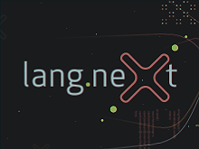Lang.NEXT is a cross-industry,, grass roots conference focused on what's trending in programming languages. It occurs every couple of years and is primarily sponsored by Microsoft. We bring together a…
Dancing with Symmetry to Harness the Power of Complexity: Subjective Programming in Context [0:44:40] [2014/07/01]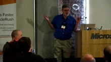At any instant when you are programming, some details rise to the foreground and others recede into the background context. The manner in which the programming language supports context profoundly…
What if anything have we learned from C++? [1:07:59] [2014/05/20]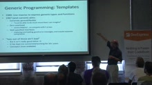What is the essence of C++? Why did it succeed despite its well-understood flaws? What lessons - if any - can be applied to newer languages? Themes: Social and technical factors. Resource…
The Future of C# [0:37:07] [2014/05/20]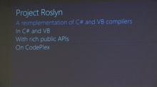Project Roslyn, a complete rewrite of the C# compiler, has paved the way for many years of language evolution. The .NET Compiler Platform is a full-fidelity, robust, immutable, incremental, efficient…
LIQUi|>: A Software Design Architecture and Domain-Specific Language for Quantum Computing [0:47:22] [2014/05/20]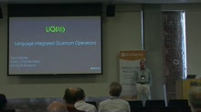Languages, compilers, and computer-aided design tools will be essential for scalable quantum computing, which promises an exponential leap in our ability to execute complex tasks. LIQUi|> is a…
ECMAScript 6 [0:44:23] [2014/05/20]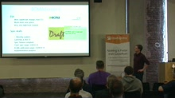The next iteration of the ECMAScript standard has been making solid progress since the completion of ES5 in 2009. Targeting standardization in the next 12 months, ES6 is on track to bring significant…
From Parallel to Concurrent [0:42:12] [2014/05/20]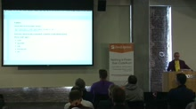At Google I was involved in the design and implementation of two significant languages. The first, Sawzall, was extremely parallel. The second, Go, is fundamentally concurrent. I will explain the…
Panel: Systems Programming in 2014 and Beyond [1:05:54] [2014/05/20]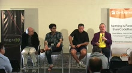C++, D, Go, Rust. Each of these languages are systems programming languages. By definition, a systems programming language is used to construct software systems that control underlying…
Duality and the End of Reactive [1:06:40] [2014/05/20]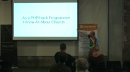Erik Meijer opens Day 2 with a talk on the end of "reactive", duality, and the usual epic musings of the Erik Meijer mind :)Warning: This is unedited for content, so there are a few f-bombs.…
TypeScript Supersetting JavaScript [0:37:06] [2014/05/20]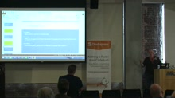JavaScript has grown from a webpage toy to being used in large-scale deployments both on the server and in the browser. This rapid growth has outpaced the growth of the language itself, which lacks…
The Present and Future of the R Programming Language [0:41:43] [2014/05/20]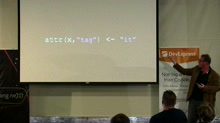As R is becoming increasingly more popular and widely used, two great challenges have emerged: performance and scalability. We aim to attack these problems with a new R engine built on top of a Java…
Converting a large codebase to Hack [0:45:20] [2014/05/20]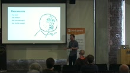Facebook recently open-sourced Hack, a programming language for HHVM. Hack uses gradual typing and is fully compatible with PHP. Over the last year, Facebook has migrated a large part of its PHP…
Leverage [0:48:23] [2014/05/20]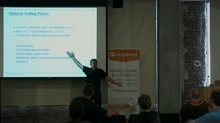Andrei Alexandrescu explains the notion of leverage whereby the interactions of seemingly minor features of the D programming language accomplish a great deal with a few lines of code. He shares the…
Panel: Type Systems and Much More [1:03:11] [2014/05/20]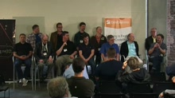Type Systems and Much More...